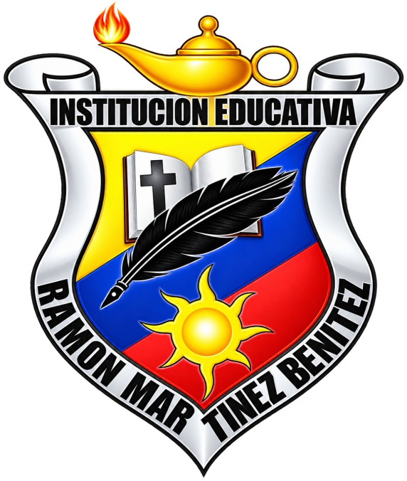
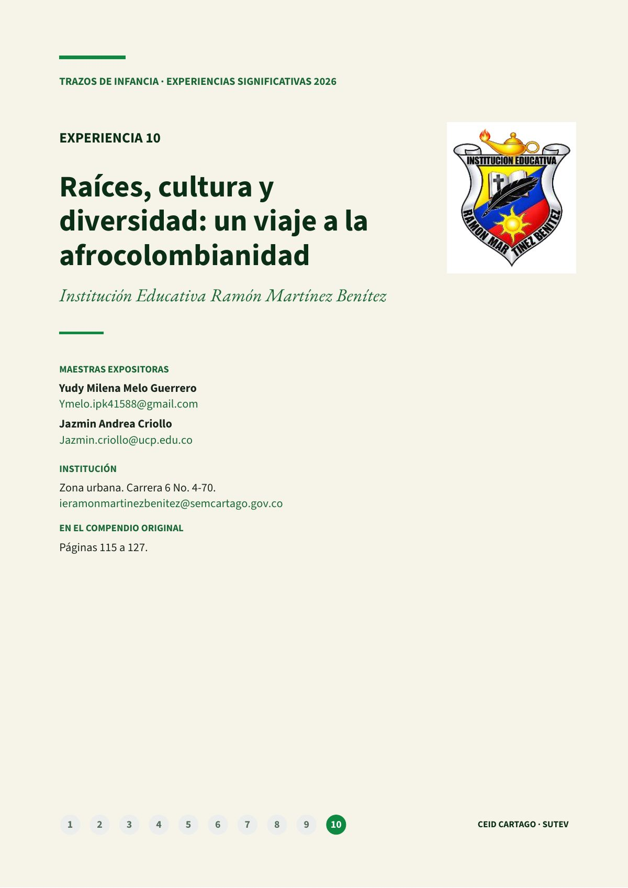
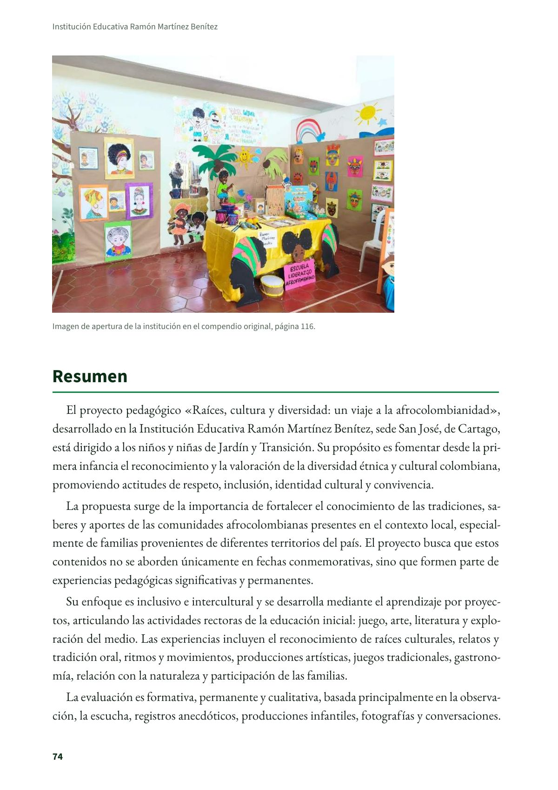
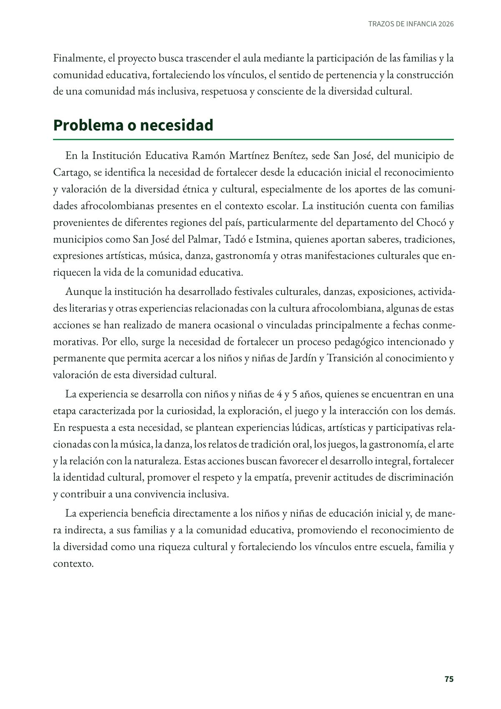
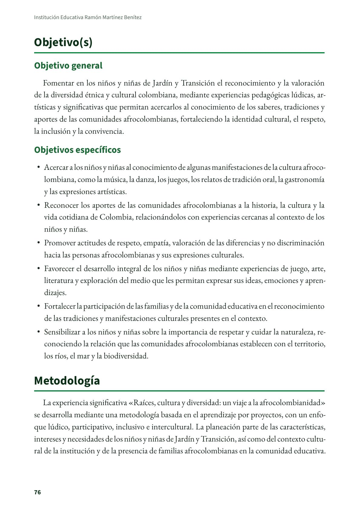
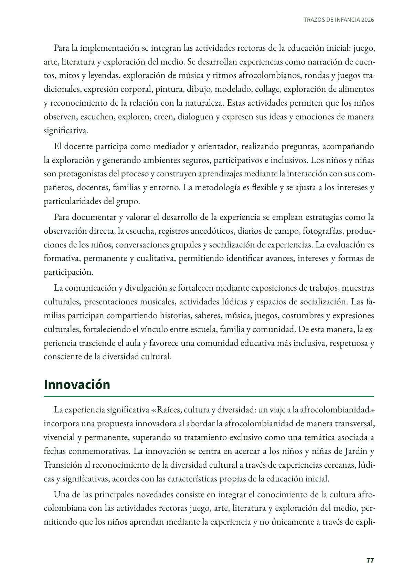
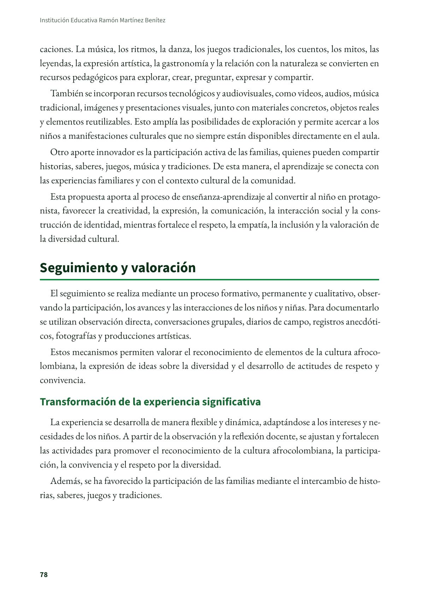
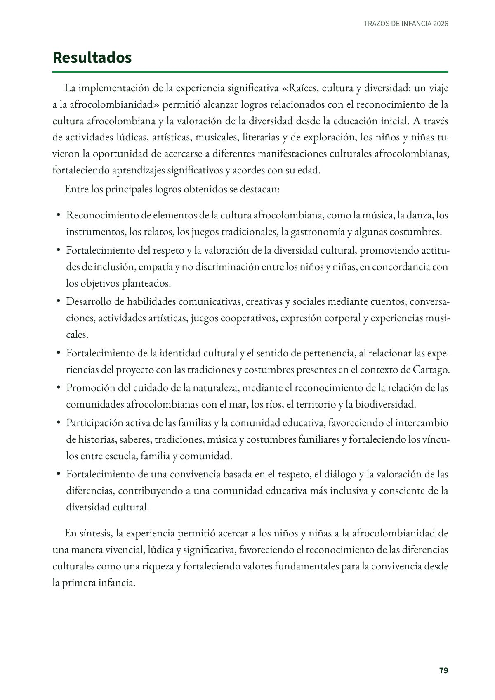
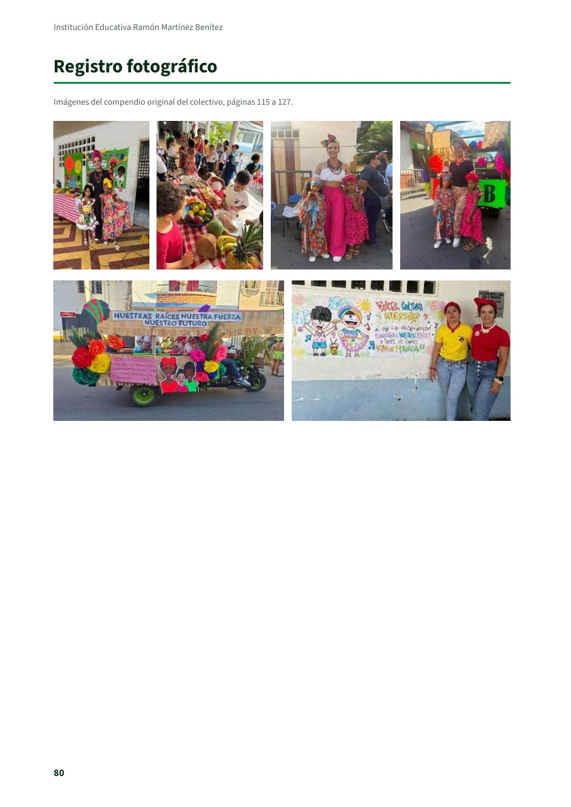

Raíces, cultura y diversidad: un viaje a la afrocolombianidad
Institución Educativa Ramón Martínez Benítez

 Colectivo Trazos de Infancia
Colectivo Trazos de InfanciaCartago · 2026
Datos de la portada institucional
Institución Educativa Ramón Martínez Benítez
Zona · Urbana
Dirección · Carrera 6 No. 4-70
Correo institucional · ieramonmartinezbenitez@semcartago.gov.co
Compendio original · Páginas 115 a 127
Maestras expositoras
- Yudy Milena Melo Guerrero
Ymelo.ipk41588@gmail.com - Jazmin Andrea Criollo
Jazmin.criollo@ucp.edu.co
Experiencia significativa en educación inicial de la Institución Educativa Ramón Martínez Benítez, de Cartago, tal como la presentaron sus maestras en el compendio del colectivo Trazos de Infancia.
PDF · 8 págs. · 285 KBResumen
El proyecto pedagógico «Raíces, cultura y diversidad: un viaje a la afrocolombianidad», desarrollado en la Institución Educativa Ramón Martínez Benítez, sede San José, de Cartago, está dirigido a los niños y niñas de Jardín y Transición. Su propósito es fomentar desde la primera infancia el reconocimiento y la valoración de la diversidad étnica y cultural colombiana, promoviendo actitudes de respeto, inclusión, identidad cultural y convivencia.
La propuesta surge de la importancia de fortalecer el conocimiento de las tradiciones, saberes y aportes de las comunidades afrocolombianas presentes en el contexto local, especialmente de familias provenientes de diferentes territorios del país. El proyecto busca que estos contenidos no se aborden únicamente en fechas conmemorativas, sino que formen parte de experiencias pedagógicas significativas y permanentes.
Su enfoque es inclusivo e intercultural y se desarrolla mediante el aprendizaje por proyectos, articulando las actividades rectoras de la educación inicial: juego, arte, literatura y exploración del medio. Las experiencias incluyen el reconocimiento de raíces culturales, relatos y tradición oral, ritmos y movimientos, producciones artísticas, juegos tradicionales, gastronomía, relación con la naturaleza y participación de las familias.
La evaluación es formativa, permanente y cualitativa, basada principalmente en la observación, la escucha, registros anecdóticos, producciones infantiles, fotografías y conversaciones. Finalmente, el proyecto busca trascender el aula mediante la participación de las familias y la comunidad educativa, fortaleciendo los vínculos, el sentido de pertenencia y la construcción de una comunidad más inclusiva, respetuosa y consciente de la diversidad cultural.
Problema o necesidad
En la Institución Educativa Ramón Martínez Benítez, sede San José, del municipio de Cartago, se identifica la necesidad de fortalecer desde la educación inicial el reconocimiento y valoración de la diversidad étnica y cultural, especialmente de los aportes de las comunidades afrocolombianas presentes en el contexto escolar. La institución cuenta con familias provenientes de diferentes regiones del país, particularmente del departamento del Chocó y municipios como San José del Palmar, Tadó e Istmina, quienes aportan saberes, tradiciones, expresiones artísticas, música, danza, gastronomía y otras manifestaciones culturales que enriquecen la vida de la comunidad educativa.
Aunque la institución ha desarrollado festivales culturales, danzas, exposiciones, actividades literarias y otras experiencias relacionadas con la cultura afrocolombiana, algunas de estas acciones se han realizado de manera ocasional o vinculadas principalmente a fechas conmemorativas. Por ello, surge la necesidad de fortalecer un proceso pedagógico intencionado y permanente que permita acercar a los niños y niñas de Jardín y Transición al conocimiento y valoración de esta diversidad cultural.
La experiencia se desarrolla con niños y niñas de 4 y 5 años, quienes se encuentran en una etapa caracterizada por la curiosidad, la exploración, el juego y la interacción con los demás. En respuesta a esta necesidad, se plantean experiencias lúdicas, artísticas y participativas relacionadas con la música, la danza, los relatos de tradición oral, los juegos, la gastronomía, el arte y la relación con la naturaleza. Estas acciones buscan favorecer el desarrollo integral, fortalecer la identidad cultural, promover el respeto y la empatía, prevenir actitudes de discriminación y contribuir a una convivencia inclusiva.
La experiencia beneficia directamente a los niños y niñas de educación inicial y, de manera indirecta, a sus familias y a la comunidad educativa, promoviendo el reconocimiento de la diversidad como una riqueza cultural y fortaleciendo los vínculos entre escuela, familia y contexto.
Objetivo(s)
Objetivo general
Fomentar en los niños y niñas de Jardín y Transición el reconocimiento y la valoración de la diversidad étnica y cultural colombiana, mediante experiencias pedagógicas lúdicas, artísticas y significativas que permitan acercarlos al conocimiento de los saberes, tradiciones y aportes de las comunidades afrocolombianas, fortaleciendo la identidad cultural, el respeto, la inclusión y la convivencia.
Objetivos específicos
- Acercar a los niños y niñas al conocimiento de algunas manifestaciones de la cultura afrocolombiana, como la música, la danza, los juegos, los relatos de tradición oral, la gastronomía y las expresiones artísticas.
- Reconocer los aportes de las comunidades afrocolombianas a la historia, la cultura y la vida cotidiana de Colombia, relacionándolos con experiencias cercanas al contexto de los niños y niñas.
- Promover actitudes de respeto, empatía, valoración de las diferencias y no discriminación hacia las personas afrocolombianas y sus expresiones culturales.
- Favorecer el desarrollo integral de los niños y niñas mediante experiencias de juego, arte, literatura y exploración del medio que les permitan expresar sus ideas, emociones y aprendizajes.
- Fortalecer la participación de las familias y de la comunidad educativa en el reconocimiento de las tradiciones y manifestaciones culturales presentes en el contexto.
- Sensibilizar a los niños y niñas sobre la importancia de respetar y cuidar la naturaleza, reconociendo la relación que las comunidades afrocolombianas establecen con el territorio, los ríos, el mar y la biodiversidad.
Metodología
La experiencia significativa «Raíces, cultura y diversidad: un viaje a la afrocolombianidad» se desarrolla mediante una metodología basada en el aprendizaje por proyectos, con un enfoque lúdico, participativo, inclusivo e intercultural. La planeación parte de las características, intereses y necesidades de los niños y niñas de Jardín y Transición, así como del contexto cultural de la institución y de la presencia de familias afrocolombianas en la comunidad educativa.
Para la implementación se integran las actividades rectoras de la educación inicial: juego, arte, literatura y exploración del medio. Se desarrollan experiencias como narración de cuentos, mitos y leyendas, exploración de música y ritmos afrocolombianos, rondas y juegos tradicionales, expresión corporal, pintura, dibujo, modelado, collage, exploración de alimentos y reconocimiento de la relación con la naturaleza. Estas actividades permiten que los niños observen, escuchen, exploren, creen, dialoguen y expresen sus ideas y emociones de manera significativa.
El docente participa como mediador y orientador, realizando preguntas, acompañando la exploración y generando ambientes seguros, participativos e inclusivos. Los niños y niñas son protagonistas del proceso y construyen aprendizajes mediante la interacción con sus compañeros, docentes, familias y entorno. La metodología es flexible y se ajusta a los intereses y particularidades del grupo.
Para documentar y valorar el desarrollo de la experiencia se emplean estrategias como la observación directa, la escucha, registros anecdóticos, diarios de campo, fotografías, producciones de los niños, conversaciones grupales y socialización de experiencias. La evaluación es formativa, permanente y cualitativa, permitiendo identificar avances, intereses y formas de participación.
La comunicación y divulgación se fortalecen mediante exposiciones de trabajos, muestras culturales, presentaciones musicales, actividades lúdicas y espacios de socialización. Las familias participan compartiendo historias, saberes, música, juegos, costumbres y expresiones culturales, fortaleciendo el vínculo entre escuela, familia y comunidad. De esta manera, la experiencia trasciende el aula y favorece una comunidad educativa más inclusiva, respetuosa y consciente de la diversidad cultural.
Innovación
La experiencia significativa «Raíces, cultura y diversidad: un viaje a la afrocolombianidad» incorpora una propuesta innovadora al abordar la afrocolombianidad de manera transversal, vivencial y permanente, superando su tratamiento exclusivo como una temática asociada a fechas conmemorativas. La innovación se centra en acercar a los niños y niñas de Jardín y Transición al reconocimiento de la diversidad cultural a través de experiencias cercanas, lúdicas y significativas, acordes con las características propias de la educación inicial.
Una de las principales novedades consiste en integrar el conocimiento de la cultura afrocolombiana con las actividades rectoras juego, arte, literatura y exploración del medio, permitiendo que los niños aprendan mediante la experiencia y no únicamente a través de explicaciones. La música, los ritmos, la danza, los juegos tradicionales, los cuentos, los mitos, las leyendas, la expresión artística, la gastronomía y la relación con la naturaleza se convierten en recursos pedagógicos para explorar, crear, preguntar, expresar y compartir.
También se incorporan recursos tecnológicos y audiovisuales, como videos, audios, música tradicional, imágenes y presentaciones visuales, junto con materiales concretos, objetos reales y elementos reutilizables. Esto amplía las posibilidades de exploración y permite acercar a los niños a manifestaciones culturales que no siempre están disponibles directamente en el aula.
Otro aporte innovador es la participación activa de las familias, quienes pueden compartir historias, saberes, juegos, música y tradiciones. De esta manera, el aprendizaje se conecta con las experiencias familiares y con el contexto cultural de la comunidad.
Esta propuesta aporta al proceso de enseñanza-aprendizaje al convertir al niño en protagonista, favorecer la creatividad, la expresión, la comunicación, la interacción social y la construcción de identidad, mientras fortalece el respeto, la empatía, la inclusión y la valoración de la diversidad cultural.
Seguimiento y valoración
El seguimiento se realiza mediante un proceso formativo, permanente y cualitativo, observando la participación, los avances y las interacciones de los niños y niñas. Para documentarlo se utilizan observación directa, conversaciones grupales, diarios de campo, registros anecdóticos, fotografías y producciones artísticas.
Estos mecanismos permiten valorar el reconocimiento de elementos de la cultura afrocolombiana, la expresión de ideas sobre la diversidad y el desarrollo de actitudes de respeto y convivencia.
Transformación de la experiencia significativa
La experiencia se desarrolla de manera flexible y dinámica, adaptándose a los intereses y necesidades de los niños. A partir de la observación y la reflexión docente, se ajustan y fortalecen las actividades para promover el reconocimiento de la cultura afrocolombiana, la participación, la convivencia y el respeto por la diversidad.
Además, se ha favorecido la participación de las familias mediante el intercambio de historias, saberes, juegos y tradiciones.
Resultados
La implementación de la experiencia significativa «Raíces, cultura y diversidad: un viaje a la afrocolombianidad» permitió alcanzar logros relacionados con el reconocimiento de la cultura afrocolombiana y la valoración de la diversidad desde la educación inicial. A través de actividades lúdicas, artísticas, musicales, literarias y de exploración, los niños y niñas tuvieron la oportunidad de acercarse a diferentes manifestaciones culturales afrocolombianas, fortaleciendo aprendizajes significativos y acordes con su edad.
Entre los principales logros obtenidos se destacan:
- Reconocimiento de elementos de la cultura afrocolombiana, como la música, la danza, los instrumentos, los relatos, los juegos tradicionales, la gastronomía y algunas costumbres.
- Fortalecimiento del respeto y la valoración de la diversidad cultural, promoviendo actitudes de inclusión, empatía y no discriminación entre los niños y niñas, en concordancia con los objetivos planteados.
- Desarrollo de habilidades comunicativas, creativas y sociales mediante cuentos, conversaciones, actividades artísticas, juegos cooperativos, expresión corporal y experiencias musicales.
- Fortalecimiento de la identidad cultural y el sentido de pertenencia, al relacionar las experiencias del proyecto con las tradiciones y costumbres presentes en el contexto de Cartago.
- Promoción del cuidado de la naturaleza, mediante el reconocimiento de la relación de las comunidades afrocolombianas con el mar, los ríos, el territorio y la biodiversidad.
- Participación activa de las familias y la comunidad educativa, favoreciendo el intercambio de historias, saberes, tradiciones, música y costumbres familiares y fortaleciendo los vínculos entre escuela, familia y comunidad.
- Fortalecimiento de una convivencia basada en el respeto, el diálogo y la valoración de las diferencias, contribuyendo a una comunidad educativa más inclusiva y consciente de la diversidad cultural.
En síntesis, la experiencia permitió acercar a los niños y niñas a la afrocolombianidad de una manera vivencial, lúdica y significativa, favoreciendo el reconocimiento de las diferencias culturales como una riqueza y fortaleciendo valores fundamentales para la convivencia desde la primera infancia.
Maestras e institución
- Yudy Milena Melo Guerrero: Ymelo.ipk41588@gmail.com
- Jazmin Andrea Criollo: Jazmin.criollo@ucp.edu.co
- Institución: Institución Educativa Ramón Martínez Benítez, zona urbana, Carrera 6 No. 4-70. ieramonmartinezbenitez@semcartago.gov.co
Así se ve en el libro
8 páginas






